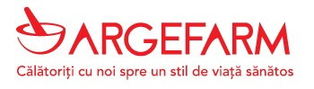
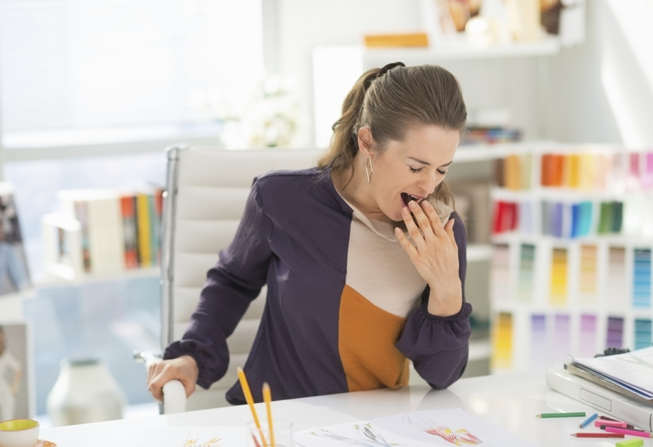

Cele mai bune pastile de slăbit fără dietă – păreri, forum, farmacii
 Skip to primary navigation Skip to main content Skip to primary sidebar Skip to footer
Ghidul Cumpărătorului Online
Andrei Cepes
Infrumusetare Sanatate Slabit Pentru BarbatiCele mai bune pastile de slăbit fără dietă păreri, forum, farmacii
Scris de Andrei Cepes
Ținând cont de gama variată de produse de slăbit, capsule, băuturi , pastile , ceaiuri, shake-uri , etc., care se găsesc în farmacii și nu numai, sarcina de a alege un produs cu adevărat eficient și rapid în a-ți oferi rezultate clare, fără diete și fără a-ți pune în pericol sănătatea, poate fi destul de dificilă. Acest articol reprezintă o sursă obiectivă de informații despre produsele de slăbit disponibile în România, astfel încât să te poți documenta și să poți alege cea mai bună soluție pentru tine.
Comanda pastilele de slabit KETO DIET direct de pe site-ul oficial al producatorului la un pret promotional redus cu 50%. Click aici pt. mai multe detalii
Pentru a-ți putea recomanda cele mai bune produse de slăbit pe care le găsești în farmaciile din România, am făcut o muncă cuprinzătoare de cercetare în care am studiat 14 suplimente nutritive care promit că te vor ajuta să slăbești fără niciun fel de dietă sau regim de exerciții fizice. În urma cercetării, am rămas cu 4 produse care au corespuns tuturor criteriilor de selecție și pe care ți le putem recomanda în acest moment cu toată încrederea.
Cuprins:
Cele mai bune produse de slăbit păreri, prețuri, farmacii, instrucțiuni de utilizare 1. Dietonus 2. Black Latte 3. Reduslim 4. Choco LiteÎn clasarea celor 4 produse pentru slăbire, despre care vei găsi toate informațiile importante în continuare în acest articol, am ținut cont de mai multe aspecte precum rezultatele testelor clinice desfășurate asupra acestor suplimente, acolo unde au existat, părerile utilizatorilor pe care le-am găsit pe forumurui și pe grupuri de diete rapide de pe Facebook, combinația de ingrediente active pe care sunt bazate suplimentele, disponibilitatea în farmacii, preț, precum și opiniile experților de pe diferite site-uri de nutriție, atât din România cât și din afară.
Cele mai bune produse de slăbit păreri, prețuri, farmacii, instrucțiuni de utilizare
Deși în titlul articolului sunt menționate doar cele mai bune pastile de slăbit, selecția noastră de suplimente nutritive cuprinde și produsele sub formă de pudră solubilă, băuturi, shake-uri, ceaiuri și batoane dietetice.
Mai jos găsești lista cu cele 4 produse pe care le recomandăm și pe care o actualizăm ori de câte ori un nou produs inovator de slăbit este lansat pe piața din România. Ținta noastră este ca această listă să fie în permanență relevantă și să reflecte realitatea.
1. Dietonus
Site oficial producator vezi pret
Pastile de slăbit Dietonus sunt un produs bazat 100% pe ingrediente naturale, cu o formulă de acțiune inovatoare, unică, care îți permite să dai jos între 3 și 7 kg săptămânal, întreaga cură de slăbire ținând 30 de zile.
Sunt 3 tipuri de capsule Dietonus în funcție de rolul terapeutic și de timpul din zi când trebuie luate. Capsula albă care se ia dimineața și care ajută la activarea rapidă a proceselor metabolice și de ardere a grăsimilor chiar de la primele ore ale zilei. Capsula albă trebuie luată între orele 8 și 11.
Între orele 12 și 15, sau la mijlocul zilei, se ia capsula roșie care are rolul de a inhiba senzația de foame pe parcursul zilei și de accelera ritmul de ardere calorică și procesele de transformare a grăsimilor în energie pentru organism.
Seara, între orele 17 și 20, trebuie luată capsula albastră care asigură menținerea metabolismului la un nivel ridicat chiar și pe perioada când corpul este în stare de repaus, prevenind astfel stocarea și acumularea grăsimilor în zone precum burta, șoldurile, fesele, și așa mai departe.
Capsulele Dietonus au o acțiune extrem de eficientă asupra straturilor de grăsime subcutanată, acțiune care duce la eliminarea celulitei și a grăsimii de pe burtă și șolduri precum și din alte părți ale corpului, predispuse la depunerea de grăsimi.
Pe site-ul oficial al producătorului pastilelor Dietonus poți găsi mai multe informații despre cele 15 componente active care stau la baza formulei de acțiune precum și farmaciile unde se găsește acest produs de slăbit naturist în România.
2. Black Latte
Site oficial producator vezi pret
Pudra solubilă Black Latte, pe bază de cărbune activ, a devenit un supliment nutritiv foarte popular în România datoriă rezultatelor obținute până în acest moment de utilizatori. Cu ajutorul acestei pudre se prepară o băutură care se consumă odată pe zi, timp de 30 de zile.
Principalul ingredient bioactiv al formulei Black Latte, cărbunele activ, poate să absoarbă până la 80% din grăsimile aflate în alimentele pe care le consumi pe perioada zilei. Datorită proprietăților sale speciale, cărbunele absoarbe grăsimile, le descompune și le transformă în energie pentru organism înaine ca acestea să poată fi stocate și să se acumuleze.
Pe lângă cărbunele active în compoziția pudrei Black Latte mai intră și L-Carnitina, un aminoacid care produce efecte asupra proceselor de ardere calorică și de metabolizare a grăsimilor, acționând astfel în mod direct asupra celulitei și a straturilor de grăsime aflate sub piele. Un alt ingredient activ este laptele de cocos care accelerează de până la 3-4 ori ritmul metabolic, ajutând astfel la eliminarea rapidă a depunerilor de grăsime de pe burtă și șolduri. Și nu în ultimul rând, cel de-al 4-lea ingredient bioactiv, acizii grași omega 3 care asigură un proces eficient de descompunere a grăsimilor.
Băutura Black Latte se prepară prin amestecarea a două lingurițe de pudră sau o lingură normală, într-o ceașcă sau o cană mai mică cu apă clocotită. Se bea odată pe zi. Bautura rezultată are un gust plăcut și este foarte ușor asimilată de către organism.
În prospectul suplimentului Black Latte pe care îl poți găsi și online, pe site-ul oficial al producătorului, afli mai multe informații despre fiecare componentă bioactivă care se găsește în compoziția acestui produs de slăbit eficient și rapid.
3. Reduslim
Site oficial producator vezi pret
Pastilele de slăbit Reduslim, conform rezultatelor obținute în urma testelor clinice, te pot ajuta să slăbești până la 14 kg în urma unei cure de slăbire care durează 28 de zile, fără dietă, fără restricții alimentare și fără un regim specializat de exerciții fizice. Acest produs a avut un succes răsunător în tări precum Germania , Marea Britanie și chiar și Statele Unite ale Americii.
În România, poți beneficia de eficiența sporită a capsulei de slăbit Reduslim la un preț foarte avantajos dacă comanzi suplimentul online, direct de pe site-ul oficial al producătorului. Mai exact, conform promoției active în acest moment pe site-ul oficial Reduslim, toate comenzile online din România au aplicată o reducere de 50% la prețul de producător al suplimentului.
Formula terapeutică Reduslim asigură o acțiune de slăbire complexă. Promovează sentimentul de sațietate, astfel că nu vei simți senzația de foame aproape 8 ore din timpul zilei. În același timp, substanțele bioactive mențin ritmul metabolic la un nivel ridicat 24 de ore din 24, ceea ce înseamnă că organismul tău va arde caloriile foarte rapid chiar și atunci când se află în stare de repaus.
Revenind la rezultatele probabile pe care le produce acest supliment nutritiv, 14kg în 28 de zile, acestea se pot îmbunătăți considerabil dacă vei face unele mici schimbări la alimentația ta și introduci un program de exerciții fizice în rutina ta zilnică.
4. Choco Lite
Site oficial producator vezi pret
Choco Lite este un supliment nutritiv sub formă de pudră cu ajutorul căreia se prepară un shake pentru slăbit care este asimilat rapid de catre organism și asigură efecte imediate asupra proceselor de ardere calorică și de metabolizare a grăsimilor din alimentele consumate.
Cura de slăbire cu băutura Choco Lite se împarte în 3 faze, toată perioada însumând 28 de zile.
În prima fază a curei, care ține 7 zile, se bea o porție porție pe zi, dimineața, înainte de servirea micului dejun. În ceea de-a doua etapă, zilele 7-21, se consumă câte o porție de băutură Choco Lite de 3 ori pe zi, înainte de mesele principale ale zilei, dimineața, la prânz și seara. În a 3-a fază, zilele 21-28, se scade numărul de porții zilnice, la două porții pe zi, dimineața și seara, înainte de masă cu jumătate de ora.
Băutura suprimă apetitul pe întreaga durată a zilei, menținând în același timp un nivel ridicat de ardere calorică. Această dublă acțiune are un rol decisiv în eliminarea rapidă a celulitei și a depunerilor de grăsime de pe burtă, șolduri, fese, picioare și alte zone problemă ale corpului.
Din punct de vedere al costului, băutura Choco Lite este cea mai avantajoasă soluție dintre toate cele 4 suplimente pe care noi le recomandăm.
Trucuri, diete, alte metode și produse de slăbire
Acum că am enumerat cele 4 produse de slăbit pe care le considerăm în acest moment ca fiind cele mai eficiente suplimente, cu cele mai rapide rezultate, pe care le poți găsi în farmaciile din România (vezi farmacia Catena, Tei, Dona, Sensiblu, Plafar), am vrea în încheiere sa îți oferim câteva sfaturi practice.
Pentru persoanele care doresc să dea jos rapid grăsimea de pe burtă și șolduri, odată cu utilizarea acestor suplimente, purtarea unei centuri pentru slăbit sau a unui corset modelator cum îi mai spune, va produce rezultate cu adevărat fantastice. Ca și recomandare, un corset modelator de calitate, care produce rezultate pe termen lung și ajută la subțierea taliei și obținerea taliei de viespe este Waist Trainer-ul.
Când vine vorba de ceaiuri pentru slăbit, nu suntem foarte convinși de eficiența acestora, însă dacă vrei sî încerci și această soluție, o variantă mai bună ar fi ceaiul verde de la alevia sau naturavit.
Deși produsele de slăbit din acest articol îți oferă rezultate mai mult decât satisfăcătoare fără nicio dietă, introducerea unui regim alimentar specializat poate face ca rezultatele finale să fie și mai bune. Așadar din acest punct de vedere putem să îți recomandăm să te documentezi despre dieta ketogenică , dieta Rina care este un tip de dietă disociată și despre dieta daneză. Găsești pe Facebook grupuri cu mii de utilizatori care îți pot oferi absolut toate informațiile de care ai nevoie.
Și pe final am vreau să vorbim și despre produsele pe care nu le recomandăm. La acest capitol intră capsula de slăbit Visislim care în urma documentării pe care am făcut-o, nu ni se pare o soluție eficientă, comparată bineînțeles cu produsele enumerate mai sus.
Publicat in decembrie 10, 2020
Articole asemanatoare:
GingeBlack pt. slăbit păreri, preț, prospect, forum, farmacii 7 Slim picături de slăbit păreri, preț, prospect, forum, farmacii Matcha Slim pudră pentru slăbit preț, păreri, prospect, forum, farmacii Keto Light+ funcționează? păreri, preț, farmacii, forum, prospect Idealica picături slăbit preț, păreri, farmacii, prospect, forumBara principală
Articole recente
Motion Energy unguent-gel preț, păreri, prospect, forum, farmacii Zenidol cremă prospect, preț, păreri, forum, farmacii GingeBlack pt. slăbit păreri, preț, prospect, forum, farmacii Îmbunătățirea vederii cele mai bune tratamente naturiste BlueStone picături sau capsule? păreri, prospect, preț, forum, farmaciiFooter
*DISCLAIMER: Informațiile de pe acest site, sau din materialele prezentate/promovate pe site nu vor să înlocuiască sfaturile unui medic specialist. Recomandăm cu tărie consultarea unui medic specialist înainte de a lua orice decizie cu privire la sănătatea dvs. Rezultatele prezentate pe site diferă de la o persoană la alta în funcție de factori precum răspunsul organismului, gradul afecțiunii, modul în care este înțeles și aplicat tratamentul, regimul alimentar și mentalul, de aceea dvs puteți obține rezultate diferite. Vă rugăm înainte de a lua orice decizie consultați un medic specialist.
Copyright © 2021 · Ghidul Cumparatorului Online · www.cepes.ro
× Acest site folosește cookie-uri. Continuând navigarea vă exprimați acordul. Inchide